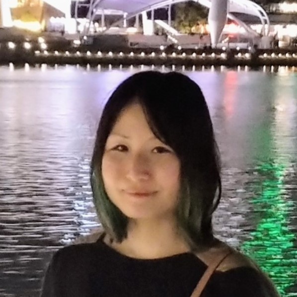
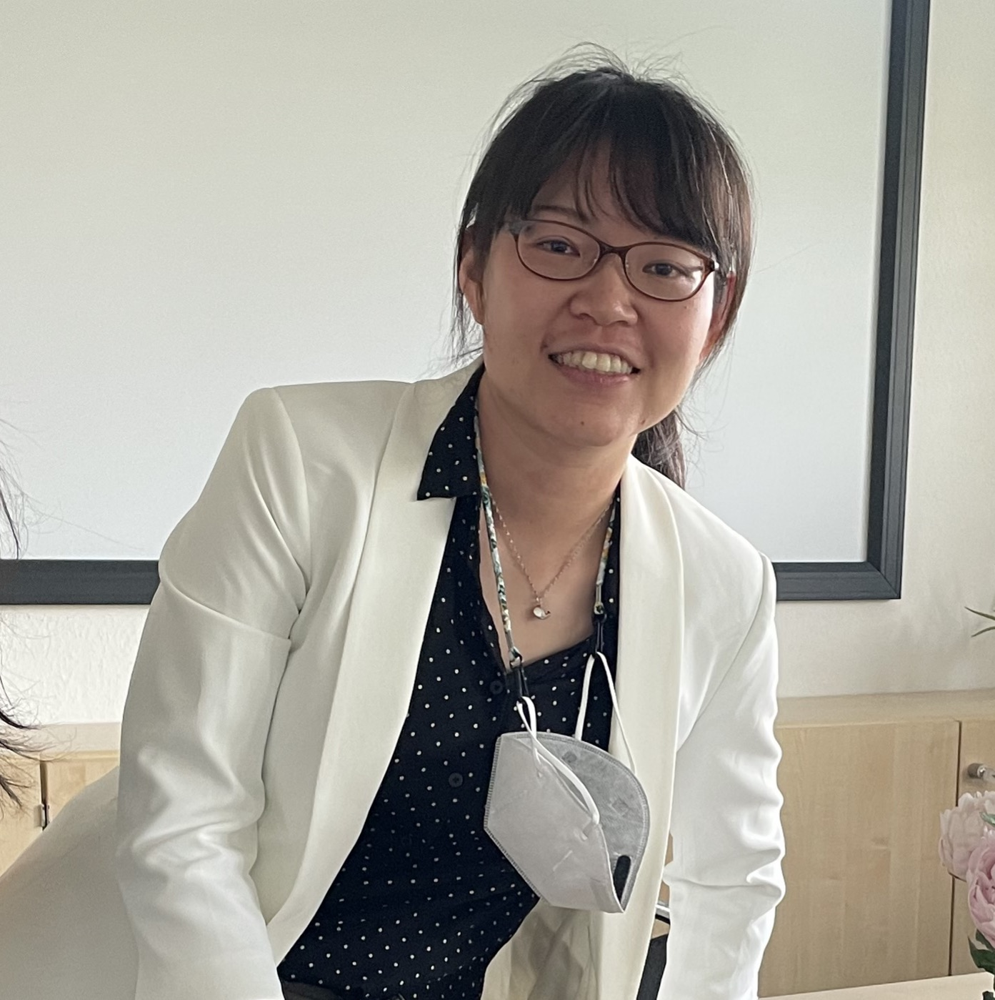
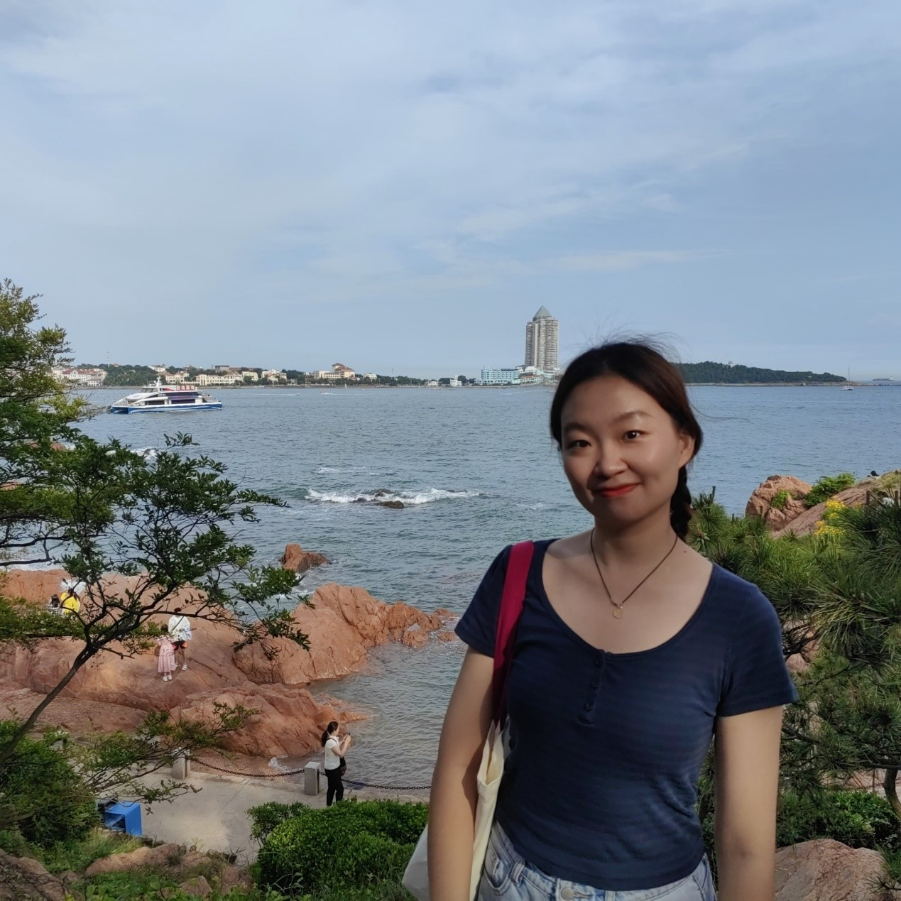

Aine Ito
伊藤愛音
Bilingualism and Language Processing Lab
We have a weekly lab meeting in the graduate reading room (AS5-05-09) during semester time. If you are interested in attending, please subscribe to the psycholing mailing list here to receive announcements about upcoming meetings.
If you are interested in taking part in on-going studies at NUS, you can sign up via our Language Science at NUS website.
Lab members
PI
|  |
Aine Ito
My research investigates what makes it difficult to comprehend a non-native language efficiently and explores ways to facilitate non-native language processing with a focus on predictive processing. I am also interested in how orthographic information influences listening comprehension. I mainly use eye-tracking (visual world paradigm), EEG and reaction time measures in my experiments. |
Postdoc
|  |
Hui-Ching Chen
I am a postdoc in the Dr. Aine Ito’s lab. My research interest is in understanding how human beings acquire language across life span and across different language groups and how language ability interacts with other cognitive ability by using off-line as well as online measures. The aim of the current project is to understand to what extent L1 and L2 speakers process language by using the eye-tracking method. |
PhD students
|
Mingyuan Yang
Hi, I’m currently a PhD student in Aine Ito’s lab. My research interests focus on the language process of bilinguals, in particular the interaction of L1 and L2, and varied linguistic representations of different language groups. You could contact me by email: e1148822@u.nus.edu |
|
|  |
Danning Sun
I am currently a Ph.D. student in English Language and Linguistics at NUS and a member of Dr. Aine Ito’s lab. My research interests center around implicit (language) learning, specifically investigating the occurrence of (linguistics) adaptation through prediction error when faced with unexpected predictions. I aim to examine how L2 English learners, with diverse L1 backgrounds, predict and revise their predictions during non-native sentence processing. Utilizing eye-tracking measurement, I hope to make a valuable contribution to SLA and gain new insights into the question of whether prediction is an essential mechanism in (language) learning or not. |
|
Daiwen Gong
I am currently a doctoral student at NUS, working with Professor Aine Ito. My research interests lie in facilitating the real-time processing of the non-native language and discovering its intricate relationship with the native language. Additionally, by utilizing behavioral measures like eye-tracking, I am keen on exploring what can be revealed by the language we speak, especially the errors we make and the difficulties we encounter. Pronouns: she/her, Email: e1148827@u.nus.edu |
MA students